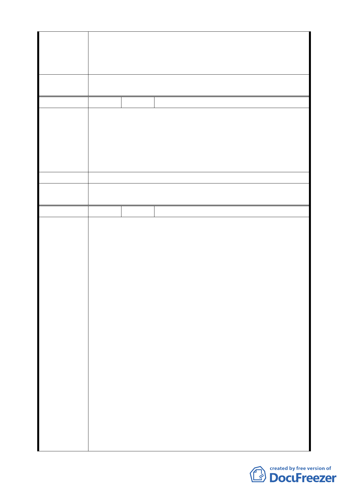

使用情事發生，故建議地上 1 至 3 層樓維持商業使用，地上 4
層樓以上開放作為住宅使用，住宅使用比例≦2/3 總容積，高
度限制以不阻擋河岸景觀，及免辦環境影響評估審查之 70 公
尺為原則。
委員會決議
本案依申請單位興富發建設股份有限公司 99.7.14 來函，同意
其撤銷申請。
編 號 2 陳情人 吳議長碧珠 99.4.9 依陳情人之意見轉述
一、「促進都市再生2010年臺北好好看」申請案所要求99年3
月前必須取得建築執照及99年9月前必須開工等時程管
陳情理由
制，市府應詳細檢討內部行政整合協調時間，於扣除不
可歸責於申請人部分之時程後予以延長。
二、全案應秉持市府推案之美意，朝專案變更方式儘速完成
各階段之審議作業。
建 議 辦 法 （同上）
委員會決議
本案依申請單位興富發建設股份有限公司 99.7.14 來函，同意
其撤銷申請。
編 號 3 陳情人 奇泰建設有限公司等 4 家
一、「金泰段臺北好好看開發案」幾經折衝，已悉依台北市
政府都市發展局 (以下簡稱「都發局」)98年10月30日北
市都規字第 09836521507 號函規定表訂規範內容、格
式，於民國98年11月3日送請台北市都市計畫委員會(以
下簡稱「都委會」) 辦理公展在案、俟後獲台北市政府
府都規字第09838862600號函於98年12月23日至99年1月
22日公展完成。
二、據「都委會」民國99年3月22日第609次都市計畫委員會
審議，會議結論稱：由市府都委會委員組成專案小組續
審，併案檢討「金泰段臺北好好看開發案」、臺北市「基
陳情理由
隆河 (中山橋至成美橋段) 附近地區土地使用分區與都
市設計管制要點」( 北段地區〉計畫案(下稱「大灣北段
通檢計畫」) 使得進行實質審查作業；惟「金泰段臺北
好好看開發案」自民國97年10月迄今歷經年餘反覆研
擬、檢討獲致共識後，始依「都發局」表訂版本送件審
查，今如須併「大灣北段通檢計畫」始得實質審查，不
免令陳情人等憂慮：
(一)「大灣北段通檢計畫」進程繁複，其結論又將牽動「金
泰段臺北好好看開發案」內容，如此一來，歷經年餘之討
論折衝豈非俱付東流？送審時程又恐將遙遙無期。
(二)「促進都市再生2010年臺北好好看」開發計畫案尚有
領取建築執照及開工時程限制，如依是項併案檢討結論執
- 28 -